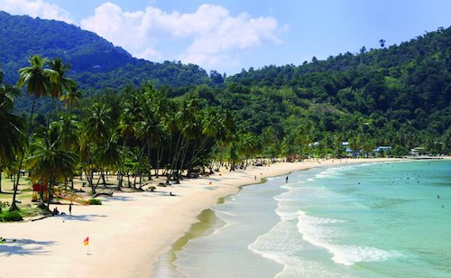
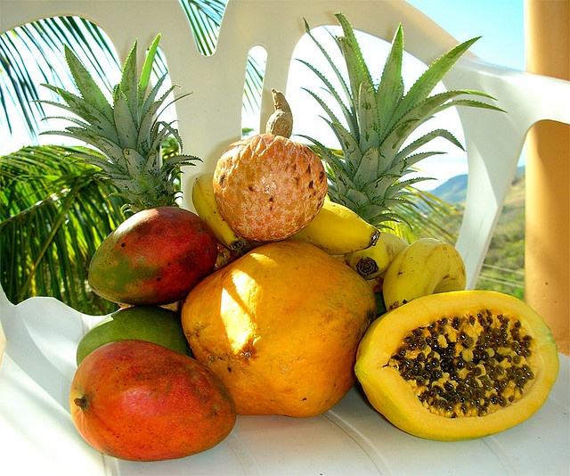
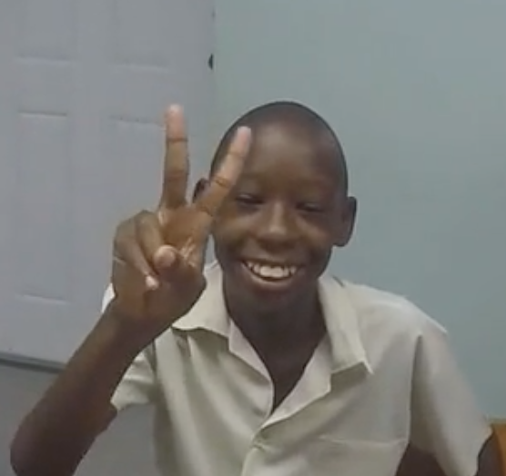

Spend time connnecting with a different way of life, building your skills as a mentor.
We have the chance to spend three months (April, May, June) working with students in rural Trinidad & Tobago as they finish primary school and prepare for secondary school and beyond.
We are looking for mentors and facilitators who can stay for 2 weeks to 3 months. You'll get to relax in the breeze and spark creativity in excited young minds.
Your time will be highly valued by everyone involved, and we'll do our best to make it a comfortable and enriching experience.
Work with Standard 5 (7th grade) students after completing secondary school entrance exams.
Spend 4 hrs / day answering questions and leading activities for 12-20 students.
Create Caribbean memories of a lifetime, and equip a new generation of innovators.
A Truly Local Experience
Sun Soaked

Join us in tropical Trinidad and Tobago, deep in the Caribbean islands. Be drenched in the sun, tropical rain, and all the warmth of the local community. Near the beach, you'll get to see Leatherback turtles nesting and a new world of natural beauty.
Eat Fresh

Living local is all about fresh. Fish, fruit, and flavors you've never tasted before. Ask any Trini and they'll tell you it's all about the food. Be prepared for a unique blend of West Indian, Indian, and African creole food, all fresh and well seasoned.
Ignite Imaginations

Work directly with passionate and eager young minds, ready to dive in and learn. With the support of teachers we'll use Code.org, FreeCodeCamp.org, and Raspberry Pi based curriculum to teach kids programming fundamentals, then apply it using basic robotics.
Expectations
Mentors
2+ years experience in programming (JS or python preferred)
Ability to buy roundtrip flights to POS (JFK: ~$400, SEA: ~$600)
Minimum 2 weeks in Trinidad + weekend before those 2 weeks
Experience volunteering in classroom settings / mentorship
Preferred experience with coding mentorship
Preferred experience working with kids age 12-14
Comfortable staying in small rural community
English speaker
Patience
Facilitators
No coding experience required
Ability to buy roundtrip flights to POS (JFK: ~$400, SEA: ~$600)
Minimum 2 weeks in Trinidad + weekend before those 2 weeks
Experience working with kids aged 12-14
Experience organizing & supporting group activities
Excited about tech and educating youth
Comfortable staying in small rural community
English speaker
Patience
Nice to haves
Experience...
working with inner-city or under-privileged youth
working with limited resources
with robotics, Raspberry Pi
with Minecraft programming
living or travelling outside US / Western Europe
or a connection to Trinidad / the Caribbean
enabling you to stay longer than 2 weeks
What's provided
You'll be coming into a community and classroom that's excited to have you, and a country full of love. Our team on the ground will arrange transportation, accomodations, and experiences. We'll provide everyone the following:
Pickup from & drop-off to the airport
A claen, private room near your school, with WiFi & high speed internet
Transportation to and from the school daily
Orientation and guidance on curriculum, daily outlines
Fresh bread, seasonal fruits, and Trinidad-grown coffee & tea
A weekly menu of prepared dinners
Adventures in nature every weekend, together or separate depending
Chances to meet the community and build relationships with each other